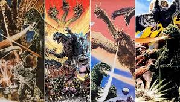
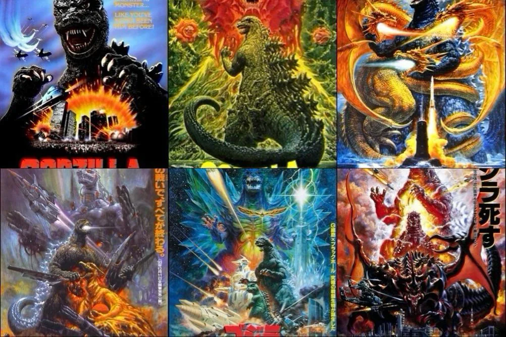
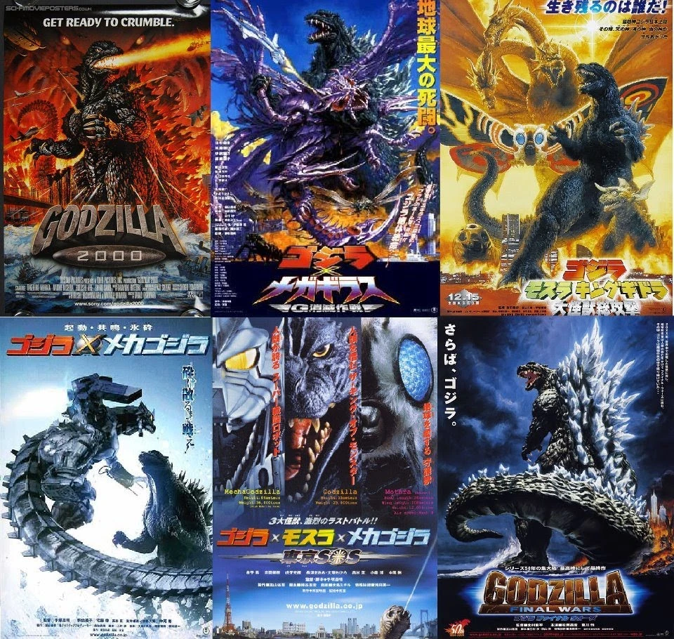
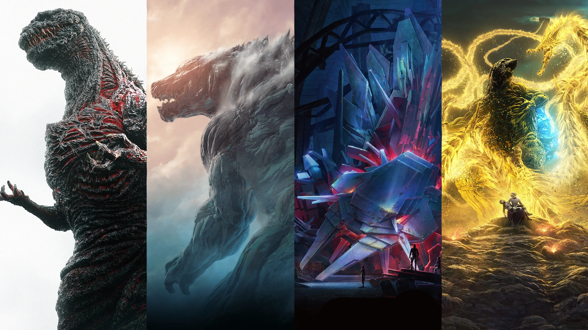
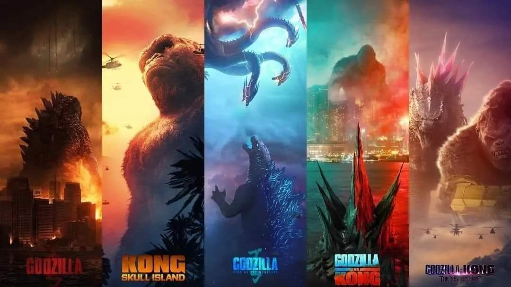

Del Gojira original (1954) al MonsterVerse actual
Resumen de las principales eras de Godzilla, su contexto, rasgos de diseño y películas representativas.

Gojira (1954) nace como metáfora del trauma nuclear. Con el tiempo pasa de amenaza a protector.

Reinicio serio con The Return of Godzilla (1984), continuidad fuerte y Godzilla imponente.

Películas tipo “antología”: cada una reimagina a Godzilla sin continuidad estricta.

Regreso autoral: Shin Godzilla (2016) y Godzilla Minus One (2023) con gran recepción crítica.

Universo compartido occidental iniciado con Godzilla (2014). Godzilla es “equilibrador natural”.